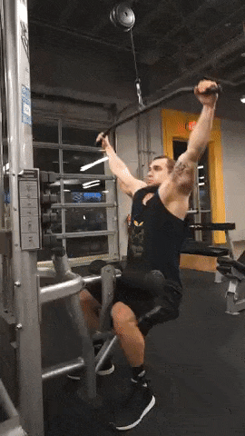
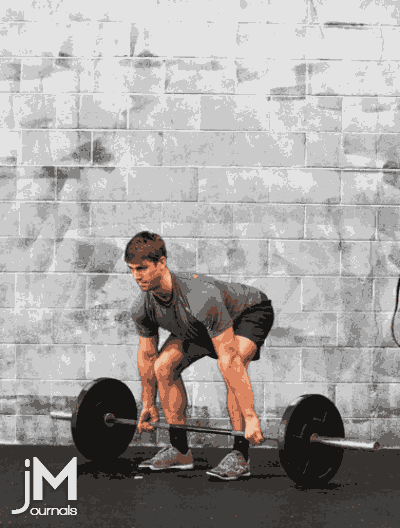

SHOULDER & BACK
SHOULDER
The upright row is performed while standing, holding a weight hanging down in the hands, by lifting it straight up to the collarbone. This is a compound exercise that also involves the trapezius, upper back, forearms, triceps, and the biceps. The narrower the grip the more the trapezius muscles are exercised.

The shoulder press is performed while seated, or standing by lowering a weight held above the head to just above the shoulders, and then raising it again. It can be performed with both arms, or one arm at a time. This is a compound exercise that also involves the trapezius and the triceps.

The lateral raise (or shoulder fly) is performed while standing or seated, with hands hanging down holding weights, by lifting them out to the sides until just below the level of the shoulders. A slight variation in the lifts can hit the deltoids even harder, while moving upwards, just turn the hands slightly downwards, keeping the last finger higher than the thumb. This is an isolation exercise for the deltoids. Also works the forearms and traps.

BACK
Lats (mid back)
The pulldown is performed while seated by pulling a wide bar down towards the upper chest or behind the neck. This is a compound exercise that also involves the biceps, forearms, and the rear deltoids.

The Pull-up is performed by hanging from a chin-up bar above head height with the palms facing forward (supinated) and pulling the body up so the chin reaches or passes the bar. The pull-up is a compound exercise that also involves the biceps, forearms, traps, and the rear deltoids. A chin-up (palms facing backwards) places more emphasis on the biceps and a wide grip pullup places more emphasis on the lats. As beginners of this exercise are often unable to lift their own bodyweight, a chin-up machine can be used with counterweights to assist them in the lift.

Lower back
The back extension is performed while lying face down partway along a flat or angled bench, so that the hips are supported and the heels secured, by bending down at the waist and then straightening up again. This is a compound exercise that also involves the glutes.

The deadlift is a very effective compound exercise for strengthening the lower back, but also exercises many other major muscle groups, including quads, hamstrings and abdominals. It is a challenging exercise, as poor form or execution can cause serious injury.[8] A deadlift is performed by grasping a dead weight on the floor and, while keeping the back very straight, standing up by contracting the erector spinae (primary lower back muscle).
